철거시장에 새로운 시작을 준비하고 있습니다. 정식 출범에 앞서, 지역마다 함께할 대표님들 안내해 드리고 있습니다.
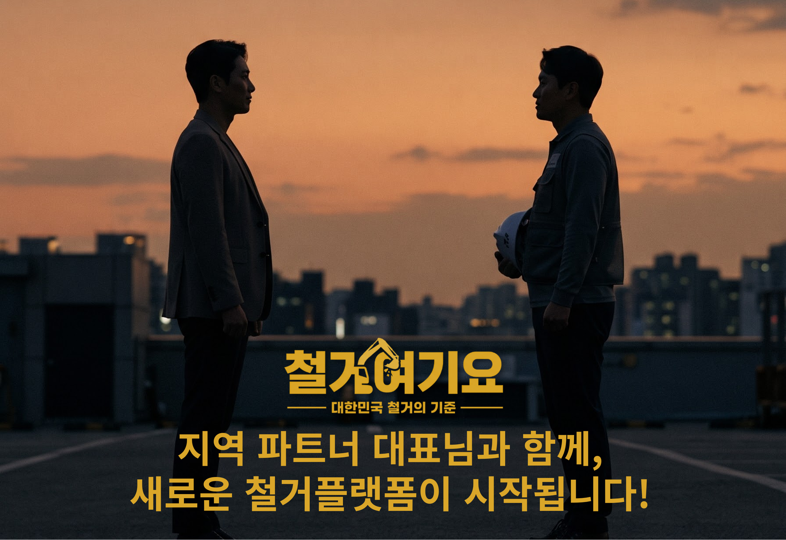
철거 현장이 끝났다고 대표님의 일이 끝나는 것은 아닙니다.
아침 일곱 시, 현장으로 나갑니다. 작업자를 챙기고, 장비를 내리고, 건물 관리실에 엘리베이터 사용 시간부터 확인합니다.
현장이 끝나면 견적서를 쓰고, 폐기물 처리와 일정을 맞추고, 전화와 문자에 답합니다. 그런데 거기서 끝이 아닙니다. 새로운 고객을 만나려면 광고와 온라인 홍보까지 챙겨야 합니다.
철거업을 하다 보면 이런 하루가 어느새 당연해집니다. “원래 사업이 다 그런 거지.”
하지만 철거를 잘하는 사람이, 현장 밖의 일까지 전부 직접 해야 하는 게 정말 당연한 일일까요?
나는 철거를 하는 사람인가,
아니면 사무실 일을 하는 사람인가.
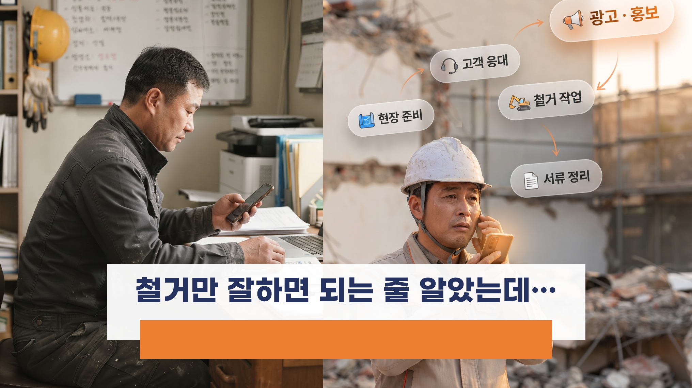
낮에는 현장, 저녁에는 고객 전화, 밤에는 다시 컴퓨터 앞. 블로그는 어떻게 해야 하는지, 광고비는 왜 나가는지 혼자 고민합니다.
물론 가족을 위해서 하는 일입니다. 더 벌고 싶고, 사업을 키우고 싶고, 지금보다 조금은 여유 있게 살고 싶어서 하루를 쪼개 씁니다. 대표님이 일하는 이유 그 자체입니다.
철거여기요는 바로 이 네 가지에서 출발했습니다.
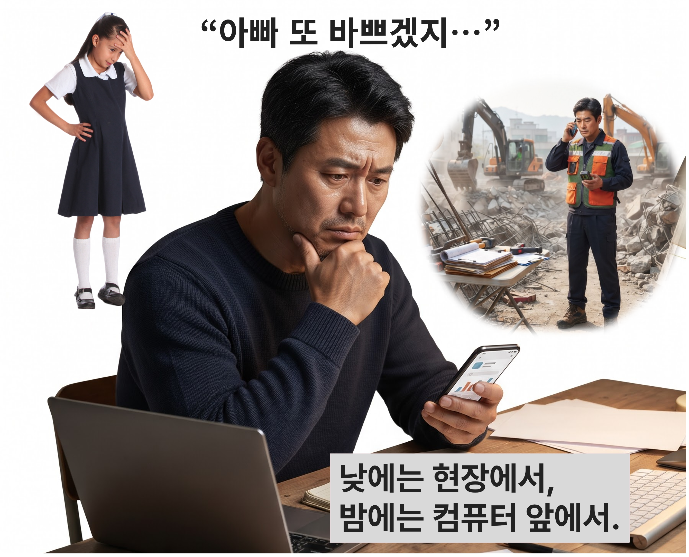
철거는 공간을 부수는 일로 끝나지 않습니다. 현장 상태와 공사 범위를 확인하고, 인력과 장비를 준비하고, 작업하고, 마무리까지 책임져야 합니다.
그래서 현장을 잘하는 대표님에게 가장 중요한 건 경험과 기술입니다. 그런데 회사를 키우는 데 필요한 능력은 또 다릅니다.
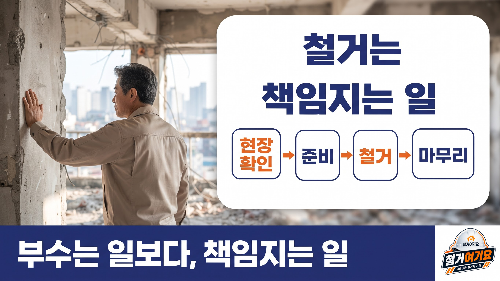
가게를 정리하는 고객은 대부분 철거가 처음입니다. 어디에 연락해야 할지 몰라 휴대폰부터 켭니다.
대표님의 실력은 현장에서 빛납니다. 하지만 고객은 현장에 오기 전에, 이미 검색 화면에서 업체를 고릅니다.
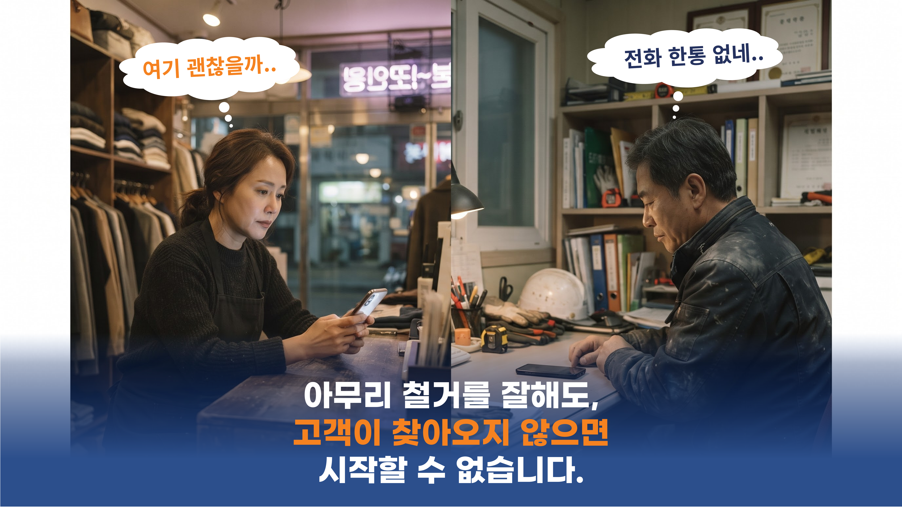
직접 해보기로 합니다. 블로그를 만들고, 사진을 올리고, 광고 계정을 열고, 검색어를 찾아봅니다.
“철거하러 나왔는데,
왜 밤에는 광고 공부를 하고 있지?”
직접 하던 광고,한계에 왔습니다.
검색하면AI가 답부터 정리하고,
사람들은블로그를 열지 않고 나갑니다.
열심히 써도보이지 않는 시대.
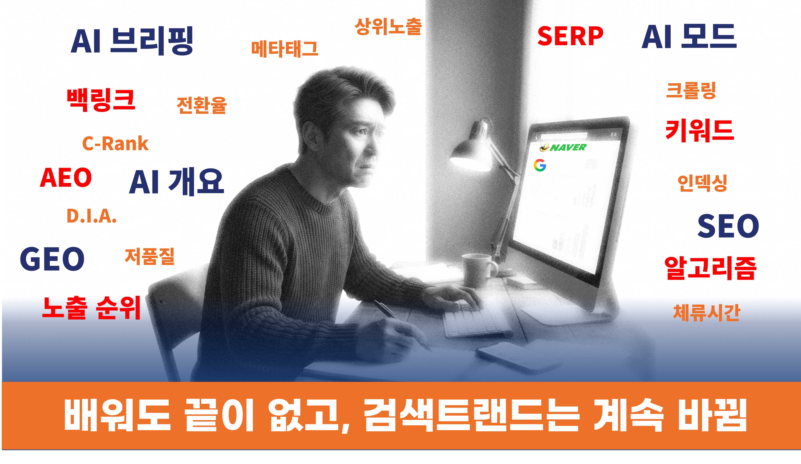
그래서 광고대행업체에 맡겨보신 분도 많으실 겁니다.
모든 곳이 그렇다는 말이 아닙니다. 다만 한 번이라도 겪으셨다면, 그건 대표님이 광고를 몰라서가 아닙니다.
직접 해도, 맡겨도 풀리지 않았다면 — 문제는 방법이 아니라 구조입니다.
철거여기요는 지난 3년, 하며 시작됐습니다. 대표님들과 계속 소통하면서 견적서, 현장 사진, 고객 문의, 광고비를 매일 가까이서 들여다봤습니다.
광고만 관리한 게 아닙니다. 철거업체가 어떻게 고객을 만나고, 현장에서 무엇에 막히는지를 하나씩 알게 됐습니다.
그래서 철거시장의 판 자체를 다시 짜 보기로 했습니다.
철거여기요가 처음부터 다르게 하려는 건 한 가지입니다.
광고를 대신 해주는 곳이 아니라, 고객을 만나는 구조 자체를 같이 짜는 곳. 그게 철거여기요가 다른 지점입니다.
사람이 모이는 시장에는 구조가 있습니다. 철거여기요는 다른 시장에서 이 있습니다. 그때 배운 건 광고 기술이 아니라, 시장이 커지는 순서였습니다.
철거시장에서는 이 구조를 제대로 짜 본 곳을 아직 보지 못했습니다. 철거여기요는 이 방식을 철거시장에 가져왔습니다.
시장이 커지면, 그 안에 있는 대표님의 기회도 함께 커집니다. 그게 철거여기요가 지역 파트너와 함께 가려는 이유입니다.
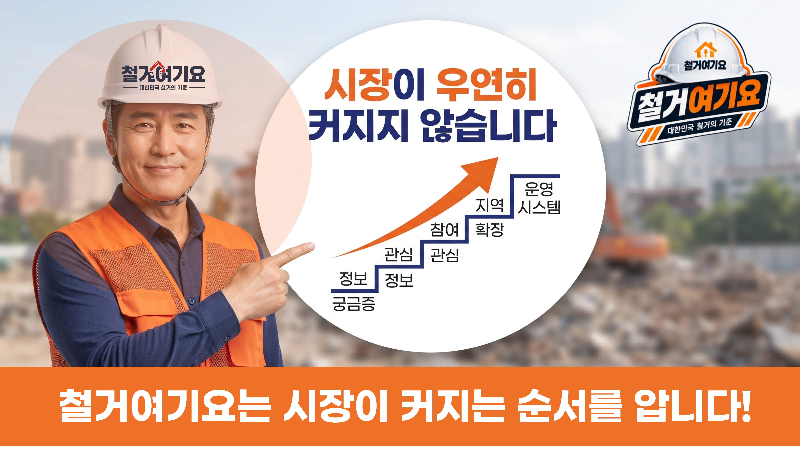
고객을 만나는 일과 현장을 책임지는 일은 다릅니다. 그래서 처음부터 나눠서 설계했습니다.
외주에 맡기지 않습니다. 광고부터 상담, 파트너 연결까지 철거여기요가 직접 운영하고, 을 받으며 함께 키워가고 있습니다.
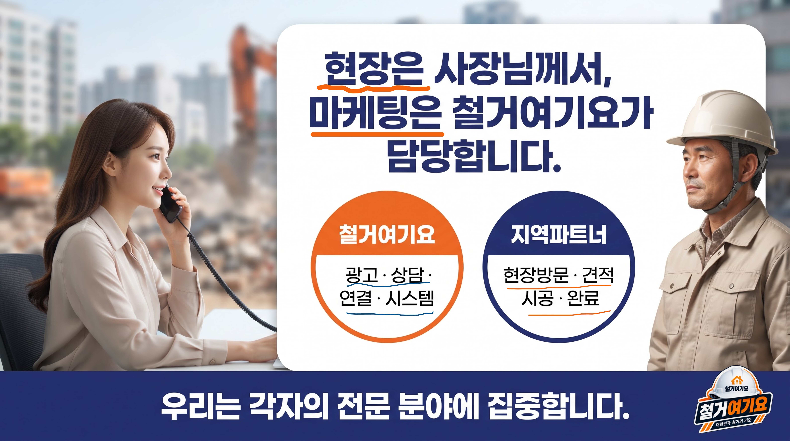
광고로 고객을 만나는 건 시작일 뿐입니다. 정말 중요한 건 그 고객이 현장을 맡길 업체가 어떤 곳이냐입니다.
현장에서 약속이 어긋나면, 고객은 그 업체를 단순한 외부 업체로 기억하지 않습니다. 로 기억합니다. 그래서 신뢰는 파트너에게만이 아니라, 철거여기요에도 함께 돌아옵니다.
철거여기요가 찾는 건 ‘일을 받을 업체’가 아니라, 고객에게 신뢰를 줄 수 있는 입니다.
철거여기요가 드리고 싶은 건 거창한 약속이 아닙니다. 혼자 짊어지던 것 중 가장 무거운 짐, 입니다.
물론 신청한다고 바로 일이 쏟아지지는 않습니다. 그렇게 말씀드리지도 않겠습니다. 다만 혼자 하던 영업과 광고를 같이 짊어질 팀이 생긴다면, 대표님 사업의 계산은 분명 달라집니다.
고객이 늘면 현장이 늘고, 현장이 늘면 지역 파트너에게 새로운 기회가 생깁니다.
하지만 철거여기요가 원하는 건 대표님이 저희에게 계속 의존하는 구조가 아닙니다. 광고·고객 응대·온라인 운영에 필요한 교육과 지원을 통해, 대표님의 사업이 스스로 설 수 있을 만큼 단단해지는 것. 그것이 저희가 생각하는 파트너십입니다.
철거여기요와 함께 커지다가, 언젠가 대표님이 저희 없이도 설 수 있을 만큼 커지는 것. 그게 이 구조가 성공했다는 뜻이라고 생각합니다.
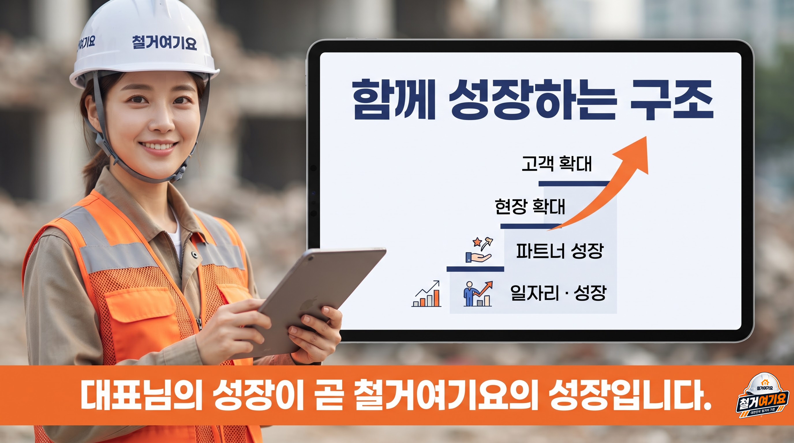
지금 철거시장은 업체 하나하나가 각자 싸우는 구조입니다. 광고비로 싸우고, 가격으로 싸우고, 검색 순위로 싸웁니다.
철거여기요는 이 시장을 하나로 묶으려 합니다. 한 업체의 고객이 아니라, 판이 커지면, 그 안에서 할 수 있는 일도 함께 늘어납니다.
아직 준비되지 않은 것을 지금 약속하지는 않겠습니다. 다만 철거와 맞닿은 틈새시장까지 판을 넓혀가겠다는 방향은 분명하고, 또한 분명합니다.
철거여기요는 2027년 1월 공식 출범을 목표로, 지역별 파트너 DB를 구축하고 있습니다.
오픈 뒤에 알아보는 것과, 오픈 전에 미리 지역 대표 파트너쉽을 만드는 것은 같을 수 없습니다. 처음부터 전국을 한꺼번에 채우지 않고, 수도권을 시작으로 지역별 전문성과 현장 대응력을 갖춘 파트너와 차근차근 만들어가려 합니다.
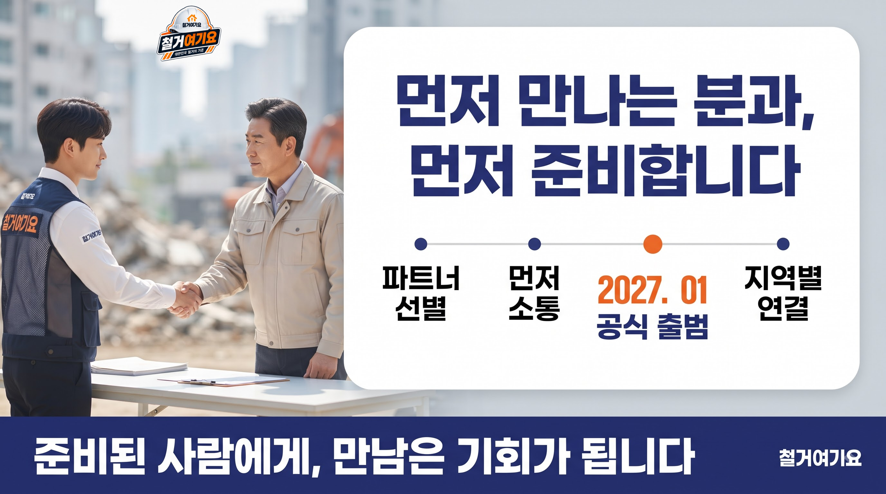
철거여기요는 지역마다 함께할 파트너를 소수로 정해두고 연락을 드리고 있습니다. 숫자를 채우는 게 목표가 아니라, 을 갖춘 대표님과 오래 가는 게 목표이기 때문입니다.
지역·업무 범위·경험·장비·현장 대응력을 확인해 파트너 DB에 정리하고, 같은 지역이라면 먼저 저희와 손을 내밀고 시작한 대표님과 더 깊이 있게 준비합니다. 신청한다고 바로 일이 배정되는 것은 아니지만, 입니다.
철거여기요는 대표님을 평가하려고 신청서를 받는 것이 아닙니다. 대표님이 어떤 현장에서, 어떤 방식으로 일해오셨는지 알고 싶어서입니다.
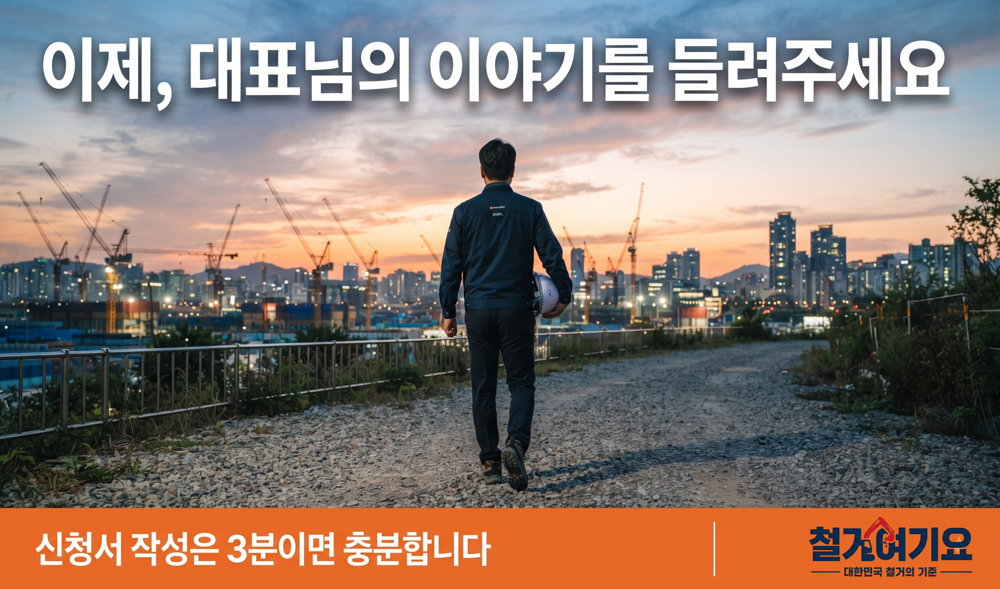
바쁜 와중에 여기까지 읽어주셨다는 것 자체가,
대표님이 어떤 분인지 말해줍니다.
이제 한 걸음만 더 남았습니다.
지역 전문업체 파트너로
함께할 대표님을 기다립니다.
철거여기요는 일감만 전달하고 수수료만 가져가는 중개 플랫폼과는 다릅니다. 고객을 만나는 광고와 상담을 직접 운영하며, 지역별로 함께할 소수의 전문업체를 찾고 있습니다.
신청서는 3분이면 충분합니다. 작성해 주시면 지역·전문분야·경험·장비·현장 대응력 등을 확인한 뒤, 담당자가 순차적으로 접수가 완료되었다는 연락을 드리겠습니다.
파트너 신청서 작성하기작성 3분 · 지금 먼저 시작하세요※ 신청서 작성은 파트너 DB 등록을 위한 절차이며, 신청 즉시 업무 배정이나 수익을 보장하는 것은 아닙니다.